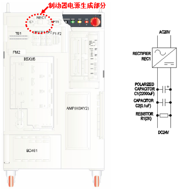

用于启动制动器的电源出现异常。
(1) 请检查回路保护器。
这可能是因回路保护器被切断所致，因此，请检查控制柜上端的回路保护器是否被阻断，若其被阻断请使其恢复。

(2) 请确认制动器电源生成部分的电压
有可能是制动器电源生成部分的问题。控制器上端装有电容器和整流器（Rectifier）。由20V的电源生成DC24V电源。请用测试仪检查是否生成了DC24V电源。

若制动器电源(DC24V)处于正常状态，请按照以下顺序采取措施。
1. 请更换顺序电路板。
2. 请更换IO板。
3. 请咨询本司